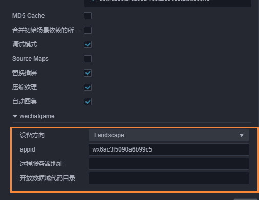
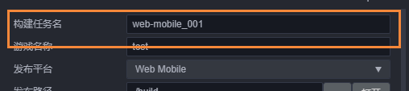
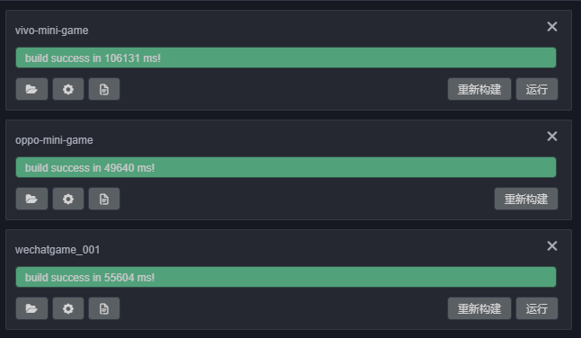
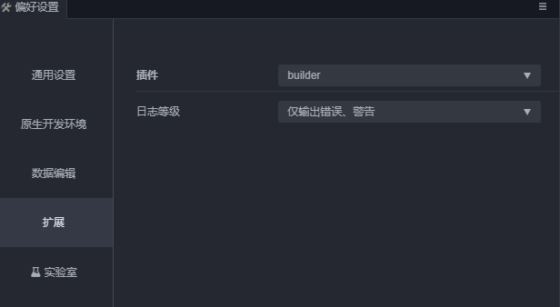
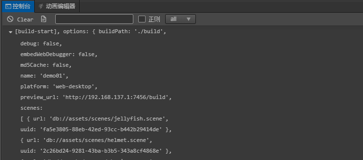
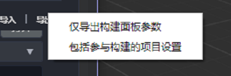

熟悉构建发布面板
构建发布面板使用简介
点击主菜单中的 项目 -> 构建发布 或者使用快捷键 Ctrl / Cmd + Shift + B 即可打开构建发布面板，构建发布是以构建任务的形式进行，如果同时添加了多个构建任务，编辑器将会按照任务添加的先后顺序，在该平台的构建任务完成后自动开始继续构建下一个任务。
平台插件相关选项
自 v1.0.3 起 ，所有的平台构建相关都内置为插件，这同时也是在为构建插件功能做内测，在将来稳定之后，我们将会开放给用户来方便对项目构建做一些定制化的插件。
也因此自 v1.0.3 起，构建界面的显示有所不同，平台相关的选项会单独的放在一个可折叠的 section 控件内（例如下图显示的微信平台选项），将来构建插件开放后，也允许用户插件用类似的方式注入界面选项，上面的名字便是插件名，在菜单里的 扩展-插件管理器 可以看到对应的平台插件。

新建构建任务
点击右上方的 新建构建任务 按钮，即可打开构建参数配置面板，在该区域内填写好相关的构建参数，点击构建即可。
在点击构建之前，请确保当前的场景数据没有未保存的内容。当前场景有内容尚未保存，点击构建后构建将会弹框提示，可以选择 保存、忽略 或者 取消构建。选择保存和忽略都会继续进行构建，而取消构建则会生成一条被取消的构建记录。
注：没有场景的项目构建是没有意义的，因而没有场景的项目是不允许添加构建任务的。
构建任务名
构建任务名，将会作为构建后生成的发布包文件夹名称，默认是无需修改的。同一个平台若执行多次构建，则会在原来的构建任务名后添加 -001、-002、-003...... 的后缀。如果想要覆盖旧有的发布包，将其手动改回原来的名称即可。

注意：Cocos Creator 是使用 发布平台 名称作为构建后生成的发布包文件夹名称，并且每次构建都会覆盖原有的发布包。而 Cocos Creator 3D 是使用 构建任务名 作为构建后生成的发布包文件夹名称，并且每次构建都会生成新的发布包，如果要覆盖原有的发布包，手动修改构建任务名与原有的发布包名称一致即可。
构建进度查看
点击构建后，可以在构建面板上看到当前的构建任务进行情况。如果构建成功，进度条会显示为绿色，并且会输出实际构建时间。第一次构建的时候，引擎编译会比较慢请耐心等待。如果构建失败，进度条则会显示为红色。

运行构建结果
目前大部分平台提供了在编辑器直接快速运行的方式，构建完成后，点击运行按钮即可预览构建后的项目效果，如果没有运行按钮则当前平台尚未支持在编辑器内直接运行，具体运行方式需要参考相关平台的文档。
注意：编辑器第一次运行微信项目时需要先配置微信开发者工具的路径并且做好一系列的登录配置工作才能正常唤起，具体可以参照编辑器控制台的提示处理。
构建 Log 信息查看
由于构建过程会产生非常多的 log 记录，默认情况下只有错误信息会打印到编辑器自带的控制台内。
如果需要查看到所有的日志信息有以下操作方式：
打开构建调试工具
通过点击菜单
开发者 -> 打开构建调试工具，即可查看在构建过程中打印出的全部 log 信息包括调用栈。调整日志等级
点击菜单里的
Cocos Creator 3D -> 偏好设置 -> 插件，切换到builder来调整控制台打印相关信息的日志等级。
打开构建日志记录文件
自 v1.0.3 起，会记录每次构建过程中产生的报错信息，点击构建任务的按钮即可查看，在向 论坛 反馈构建相关问题时，可以直接贴上该 log 文件。
这里的 log 文件会存储在项目目录下的
temp/build-log文件夹内。
构建参数查看
构建面板的构建任务下方有一个 按钮，点击即可查看或者调整之前的构建选项配置，调整完成后点击 重新构建 按钮，生成的发布包将会覆盖原来的。
在编辑器内构建过的构建任务信息，将会保存在项目目录下的 profiles/packages/build.json 文件中，只要没有在面板上删除对应构建任务或者删除对应的实体文件，就可以在重新打开编辑器后查看之前构建的参数配置、运行预览等操作。
注意：查看面板的修改操作是为了方便用户调整参数后重新构建，如果调整参数后没有点击 重新构建，则修改的内容不会被保存到当前构建任务中，只会作为下一次新建构建任务时的显示数据，查看的始终是上一次构建的配置参数而不是修改后的。这个按钮打开的面板虽然和新建类似但是意义不同，请不要混淆。
同时，点击构建构建后，编辑器也将打印出当前构建的参数内容，可以作为命令行构建的参数配置参考。

导出 / 导入构建选项配置
导出
构建面板右上方的导出选项可将当前构建选项的配置导出为 json 文件，主要是为了方便 命令行构建 以及同个项目内共享构建选项配置。导出的构建参数是按照平台区分的，对于使用命令行构建的开发者，可以直接将这份 json 配置文件作为命令行构建参数的 configPath 来使用。

导入
导入选项可读取 json 配置文件到构建面板，方便开发者共享构建配置信息。
重新编译
经常在打包后，会想要更改之前配置参数或者是之前的项目内 bug 修复后希望重新构建。而构建面板这边提供了两种重新编译的入口.
一种是直接在构建任务上，点击将会直接复用之前的构建配置参数进行重新构建。
另一种则是在点击
查看构建配置参数后也会有重新构建的按钮出现。不同的是，后一种构建任务名与构建平台以外参数是不能修改的因为这会影响到实际的生成目录，并且直接修改重新构建面板的数据而没有重新构建，是不会保存到实际构建任务内的。